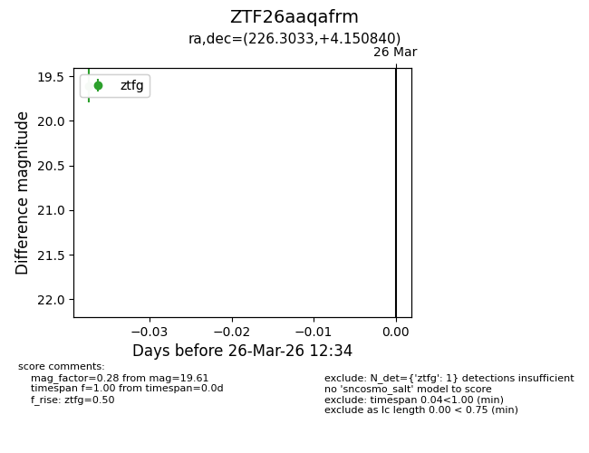
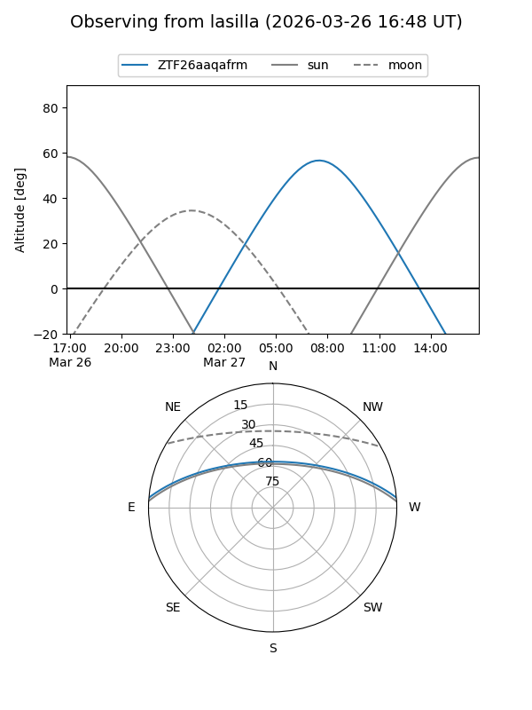
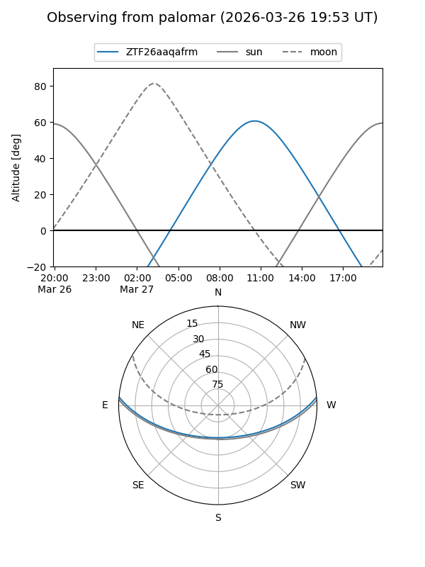

ZTF26aaqafrm
Target ZTF26aaqafrm at 2026-03-26 12:36
Aliases and brokers:
FINK: link
Lasair: link
ALeRCE: link
alt names
ZTF26aaqafrm (ztf,fink_ztf)
Coordinates:
equatorial (ra, dec) = 226.3033,+4.15084
equatorial (HMS+DMS) = 15:05:12.80,+04:09:03.02
galactic (l, b) = (3.1110,+50.68612)
Flags:
Photometry:
last ztfg=19.61
1 ztfg detections
Lightcurve

Visibility


Additional plots